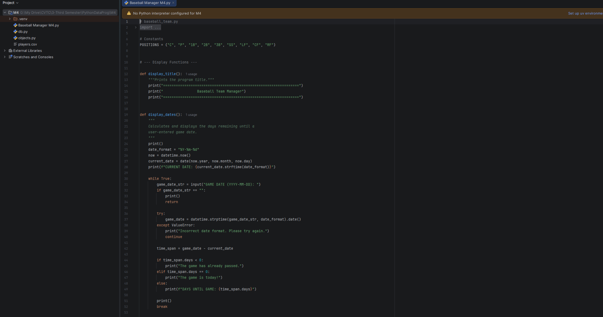
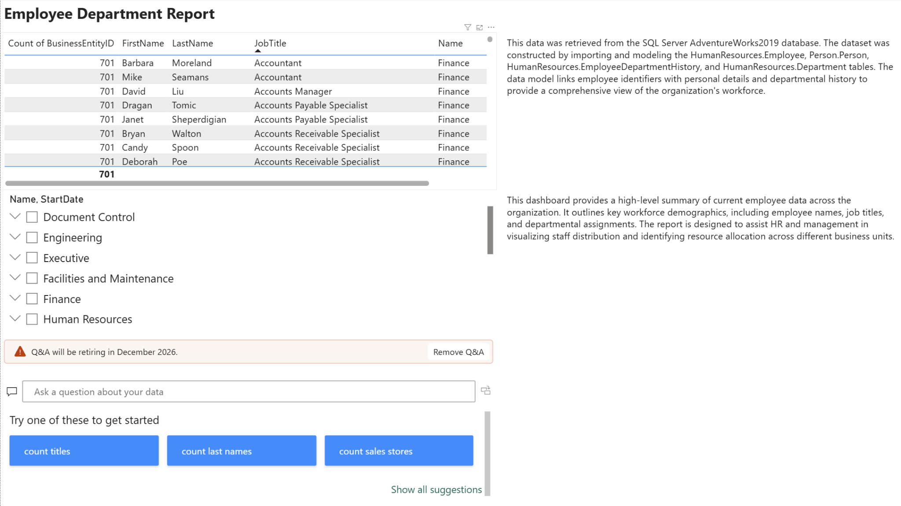

Block 3 — Third Semester. This page summarizes three courses and includes examples of my Python and Power BI coursework.
Python Data Programming
This course focused on writing Python programs that work with data. We started with programming basics and moved into reading files, using databases, and analyzing information with Python libraries.
Topics and skills covered
- Using variables, conditions, loops, functions, and lists.

Introductory ETL
In Introductory ETL, I learned about moving and preparing data so it can be used for analysis and reporting. The course covered how to extract data, clean and transform it, check its accuracy, and load it into a destination.
Topics and skills covered
- Understanding ETL (Extract, Transform, Load) and how it supports data integration.
- Working with structured and unstructured data from different sources.
- Cleaning and transforming data to meet requirements.
- Validating results, checking data quality, and testing an ETL process.
- Loading data into a target system and comparing ETL with ELT.
BI Data 2 – Interactive
This course focused on using Power BI to build reports that people can explore. We worked with importing data, cleaning it in Power Query, connecting tables, and presenting information through interactive charts and dashboards.
Topics and skills covered
- Connecting Power BI Desktop to data sources such as SQL Server, spreadsheets, and websites.
- Cleaning data and changing data types using Power Query.
- Creating table relationships, key performance indicators, and measures.
- Building visualizations with slicers, filters, and drill-through features.
- Learning about Power BI Service, report sharing, and row-level security.
